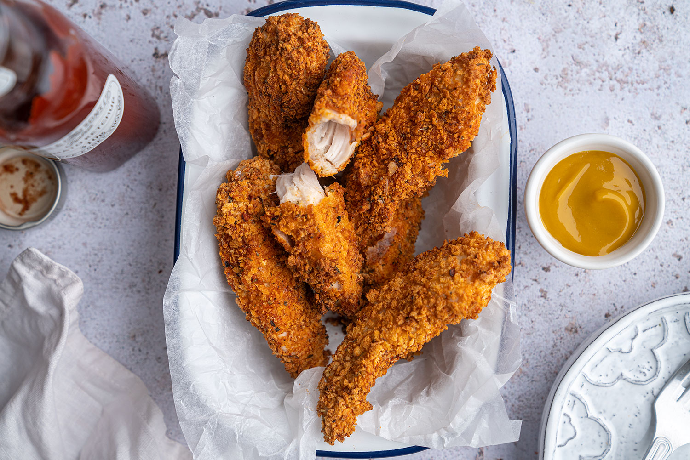

Air Fried Chicken Tenders

Description
Air fryer cooked chicken tenders are quick and easy to make and will surely become a family favorite.
Ingredients
- cooking spray
- 1 large egg
- 1/2 cup panko bread crumbs
- 2 tablespoons canola oil
- 8 chicken tenders (about 1 lb.)
- chopped fresh parsley, for garnish (optional)
- 2 tablespoons honey mustard sauce
Steps
- Preheat air fryer to 350 degrees F (175 degrees C). Coat basket with cooking spray.
- Whisk egg in a small bowl. In another bowl, stir together panko and oil until loose and crumbly.
- Dip each chicken tender into egg, allowing excess to drip off. Dip chicken in panko mixture to coat completely. Working in batches if needed, arrange chicken in an even layer in the air fryer basket.
- Cook until chicken is no longer pink in the center and the juices run clear, about 12 minutes. An instant-read thermometer inserted into the center should read at least 165 degrees F (74 degrees C). Garnish with parsley and serve with honey-mustard sauce.
Link to original recipe
Back to top
Back to main menu